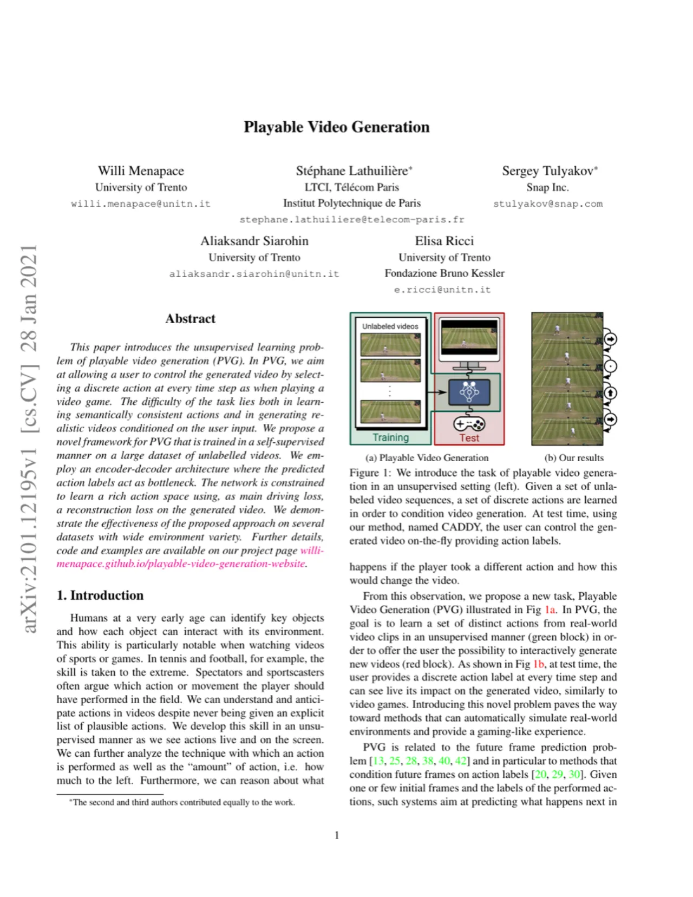
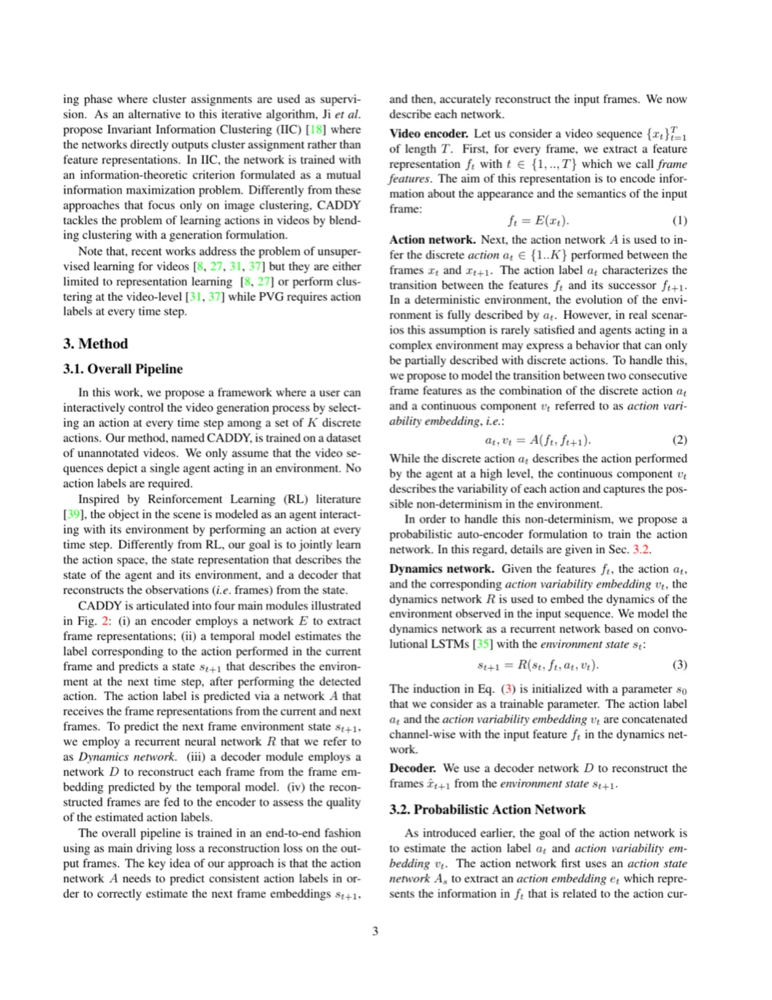
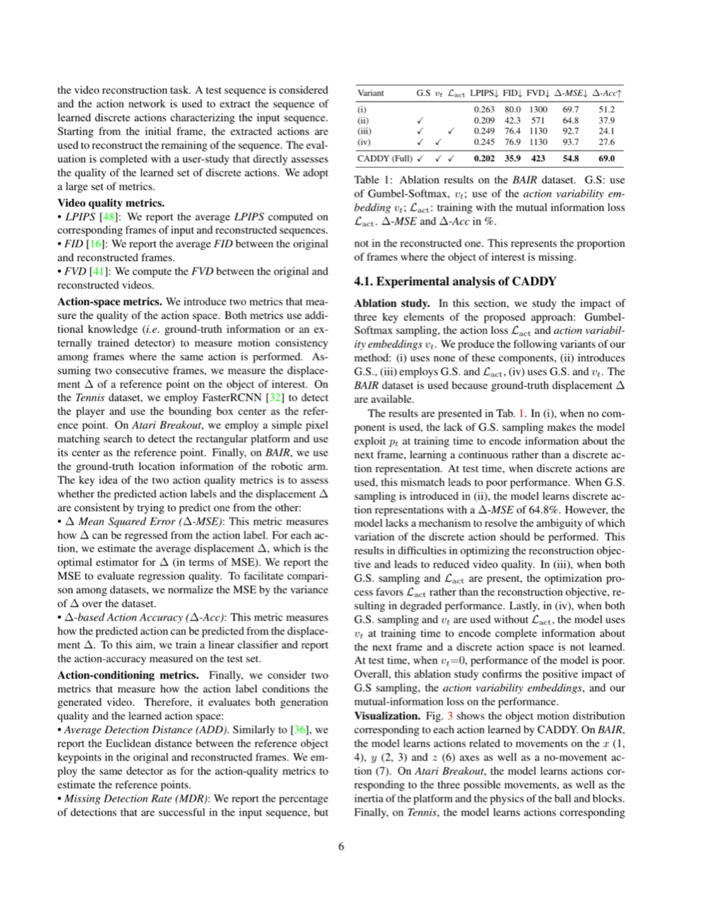
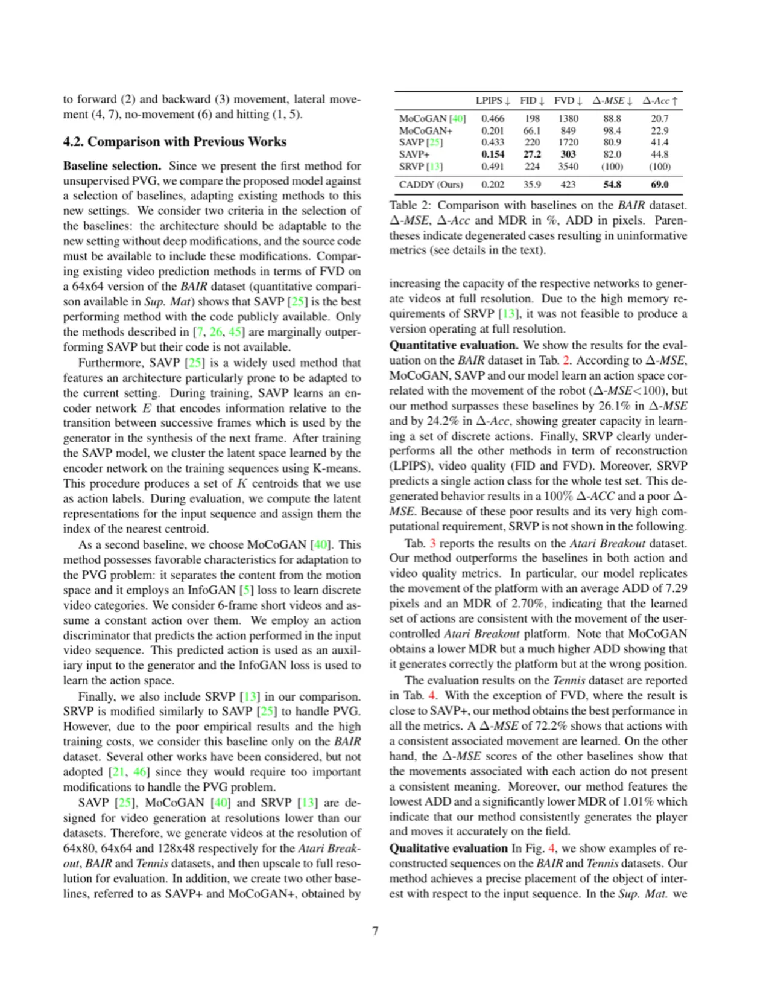

本文提出了一个全新任务——Playable Video Generation (PVG)：在完全无标注视频上，自监督地学习一组离散动作，使用户在测试阶段能够逐帧选择动作、像玩游戏一样实时控制生成视频的内容。方法 CADDY 采用编码-解码架构，以预测的动作标签作为信息瓶颈，以重建损失为主要驱动信号，无需任何动作标签监督，在机器人推物、Atari Breakout 和网球三个数据集上均取得最优性能。
人类从很小就能识别关键物体及其与环境的交互方式——我们能够在从未被明确告知可能动作的情况下，自发地理解和预判视频中的行为。然而，现有视频生成方法要么需要帧级动作标注（限制于游戏或机器人场景），要么仅能用单个标签控制整段视频（无法逐帧实时交互）。
"We aim at allowing a user to control the generated video by selecting a discrete action at every time step as when playing a video game."

PVG 的核心挑战有两个：（1）动作的语义一致性——在无监督前提下学习到真正有意义的离散动作，而非任意划分；（2）真实视频生成——根据用户提供的离散动作，生成高质量且连贯的视频帧。现实视频中的随机性（如摄像机抖动、光照变化等）进一步增加了用离散标签完整描述帧间过渡的难度。
CADDY（Clustering for Action Decomposition and DiscoverY）是一个端到端自监督框架，由四个主模块组成：编码器 E、动作网络 A、循环动力学网络 R、解码器 D。整体以视频帧重建损失为主要驱动，迫使动作网络学到语义一致的离散表示。

动作网络 A 的目标是将帧间过渡分解为：（1）离散动作标签 a_t（高层语义）；（2）连续变分嵌入 v_t（捕捉每个动作执行方式的细节差异）。具体做法是：先用动作状态子网络 A_s 预测当前帧特征 f_t 的动作嵌入 e_t 服从高斯分布；再将前后两帧嵌入之差 d_t = e_{t+1} − e_t 送入分类层；分类层采用 Gumbel-Softmax 实现端到端可微分的离散化，输出动作概率 p_t 及离散标签 a_t。v_t 定义为 d_t 与其对应动作簇质心 c_k 的差，强制 d_t 无法完全从 v_t 中恢复，从而迫使网络学习真正的离散动作。
总损失函数由五项组成：
在三个数据集上评测：BAIR（机器人推物，约44K段30帧视频，256×256）、Atari Breakout（Rainbow DQN采集，1407段约32帧，160×210）、Tennis（YouTube网球比赛，约900段，256×96）。基线方法包括 MoCoGAN、MoCoGAN+、SAVP、SAVP+（增容量版）、SRVP。评估指标涵盖视频质量（LPIPS、FID、FVD）、动作空间质量（Δ-MSE、Δ-Acc）和动作条件生成质量（ADD、MDR）。
| 方法 | LPIPS↓ | FID↓ | FVD↓ | Δ-MSE↓ (%) | Δ-Acc↑ (%) |
|---|---|---|---|---|---|
| MoCoGAN | 0.466 | 198 | 1380 | 88.8 | 20.7 |
| MoCoGAN+ | 0.201 | 66.1 | 849 | 98.4 | 22.9 |
| SAVP | 0.433 | 220 | 1720 | 80.9 | 41.4 |
| SAVP+ | 0.154 | 27.2 | 303 | 82.0 | 44.8 |
| SRVP | 0.491 | 224 | 3540 | (100) | (100) |
| CADDY (Ours) | 0.202 | 35.9 | 423 | 54.8 | 69.0 |
CADDY 相比最佳基线在 Δ-MSE 上提升 26.1%，在 Δ-Acc 上提升 24.2%，展示出更强的离散动作学习能力。SRVP 因预测整个测试集只有单一动作类别（退化行为），Δ-MSE 和 Δ-Acc 均失去意义。
| 方法 | LPIPS↓ | FID↓ | FVD↓ | Δ-MSE↓ (%) | Δ-Acc↑ (%) | ADD (px)↓ | MDR (%)↓ |
|---|---|---|---|---|---|---|---|
| MoCoGAN | 0.234 | 99.9 | 447 | 81.9 | — | 46.0 | 0.795 |
| MoCoGAN+ | 65.8e-3 | 10.4 | 103 | 57.5 | — | 54.6 | 17.4 |
| SAVP | 0.239 | 98.4 | 487 | 58.1 | — | 24.7 | 21.0 |
| SAVP+ | 39.3e-3 | 4.84 | 104 | 85.6 | — | 15.8 | 51.5 |
| CADDY (Ours) | 7.66e-3 | 0.716 | 5.94 | 82.7 | 91.6 | 7.29 | 2.70 |
CADDY 在 Atari Breakout 上取得最优性能：平均 ADD 仅 7.29 像素，MDR 仅 2.70%，说明学到的动作空间与用户控制平台的运动高度一致。
| 方法 | LPIPS↓ | FID↓ | FVD↓ | Δ-MSE↓ (%) | Δ-Acc↑ (%) | ADD (px)↓ | MDR (%)↓ |
|---|---|---|---|---|---|---|---|
| MoCoGAN | 0.266 | 132 | 3400 | 101 | 26.4 | 28.5 | 20.2 |
| MoCoGAN+ | 0.166 | 56.8 | 1410 | 103 | 28.3 | 48.2 | 27.0 |
| SAVP | 0.245 | 156 | 3270 | 112 | 19.6 | 10.7 | 19.7 |
| SAVP+ | 0.104 | 25.2 | 223 | 116 | 33.1 | 13.4 | 19.2 |
| CADDY (Ours) | 0.102 | 13.7 | 239 | 72.2 | 45.5 | 8.85 | 1.01 |
Tennis 数据集上，CADDY 在绝大多数指标取得最优，MDR 仅 1.01%，ADD 仅 8.85 像素，显著优于基线，说明能准确生成并追踪球员位置。

| 变体 | G.S. | v_t | L_act | LPIPS↓ | FID↓ | FVD↓ | Δ-MSE↓ (%) | Δ-Acc↑ (%) |
|---|---|---|---|---|---|---|---|---|
| (i) 无任何组件 | — | — | — | 0.263 | 80.0 | 1300 | 69.7 | 51.2 |
| (ii) + G.S. | ✓ | — | — | 0.209 | 42.3 | 571 | 64.8 | 37.9 |
| (iii) + G.S. + L_act | ✓ | — | ✓ | 0.249 | 76.4 | 1130 | 92.7 | 24.1 |
| (iv) + G.S. + v_t | ✓ | ✓ | — | 0.245 | 76.9 | 1130 | 93.7 | 27.6 |
| CADDY (完整) | ✓ | ✓ | ✓ | 0.202 | 35.9 | 423 | 54.8 | 69.0 |
消融实验证明三个核心组件（Gumbel-Softmax、动作变分嵌入 v_t、互信息损失 L_act）缺一不可：去掉 G.S. 则学到连续而非离散动作；单独使用 L_act 优化会与重建目标冲突导致质量下降；v_t 和 L_act 必须配合使用，才能避免网络将所有信息编码进连续变量而忽略离散动作。

作者进行了用户研究，要求23名用户从生成序列中辨认出执行的动作（左/右/前进/后退/击球/静止）。CADDY 获得最高的 Fleiss' kappa 一致性（0.469），而基线方法（MoCoGAN: −3.15×10⁻³，MoCoGAN+: −2.84×10⁻³，SAVP: 0.0718，SAVP+: −1.97×10⁻³）均无法达到有意义的一致性，说明 CADDY 学到的动作具有稳定的语义含义。
CADDY 假设视频中只有单个智能体在环境中行动。论文在 Conclusions 中明确指出："As future work, we plan to extend our method to multi-agent environments."——多球员比赛、多机器人协作等场景当前无法处理。
K 值（动作簇数量）作为超参数在实验前确定，方法本身没有自动选择最优 K 的机制。不同数据集需单独调整，且过小的 K 可能导致语义粒度不足，过大则可能出现冗余动作。
基线方法（SAVP、MoCoGAN、SRVP）受内存限制仅能在 64×64 或更低分辨率下运行，CADDY 虽在全分辨率下测试，但当分辨率进一步提升时，convolutional LSTM 的计算成本将显著增加。
测试时采用自回归方式（以重建帧作为下一步输入），论文指出这会引入"shift issue"——网络在训练时未完全暴露于自己生成的图像。混合训练策略（mixed training）可部分缓解但无法完全消除该问题。